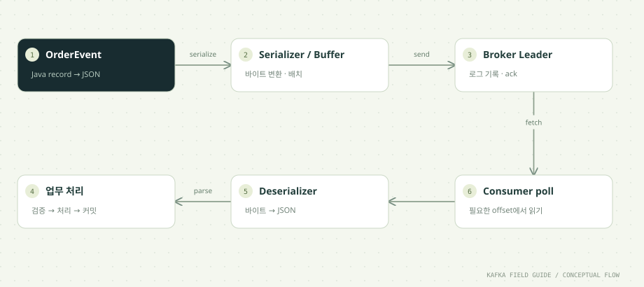

이 단원을 마치면
- 직렬화와 역직렬화를 설명한다
- 비동기 send의 결과를 확인한다
- 설정과 업무 코드를 구분한다
- acks · 재시도 · 타임아웃 · 배치 설정이 신뢰성과 처리량을 어떻게 바꾸는지 설명한다
01 / UNDERSTAND먼저, 원리를 이해합니다.
네트워크에는 바이트가 흐릅니다
Kafka 브로커는 레코드의 key와 value를 바이트 배열로만 다룹니다. 그 안이 JSON인지, 숫자인지, 이미지인지 브로커는 모르고 신경 쓰지도 않습니다. 그래서 Producer는 객체를 바이트로 바꾸는 Serializer를, Consumer는 바이트를 다시 객체로 되돌리는 Deserializer를 설정합니다.
이 과정의 흐름은 두 단계입니다. 먼저 업무 코드가 OrderEvent record를 Jackson으로 JSON 문자열로 바꾸고(event.json()), 그 다음 Kafka의 StringSerializer가 문자열을 UTF-8 바이트로 바꿉니다. Consumer 쪽은 정확히 거꾸로, StringDeserializer가 문자열을 만들고 업무 코드가 OrderEvent.parse()로 JSON을 읽어 검증합니다.
이 구조에서 중요한 점은 Producer와 Consumer가 형식을 약속해야 한다는 것입니다. 한쪽이 형식을 바꾸면 다른 쪽은 읽지 못합니다. 읽을 수 없는 레코드 한 건이 Consumer를 계속 실패시키는 것을 흔히 poison pill이라고 부르며, 07단원에서 DLT로 다룹니다. 형식의 진화는 12단원과 부록 A2의 Schema Registry에서 이어서 다룹니다.
send는 비동기 API입니다
producer.send(record)는 레코드를 직렬화하고 파티션을 정한 뒤 Producer 내부 버퍼에 넣고 곧바로 반환합니다. 실제 네트워크 전송은 Producer의 백그라운드 I/O 스레드가 나중에 합니다. 따라서 send()가 예외 없이 끝났다고 브로커에 저장되었다고 볼 수 없습니다.
결과는 두 가지 방법으로 확인합니다.
Future.get()으로 기다리기:send(record).get()은 ack가 올 때까지 현재 스레드를 멈추고, 성공하면RecordMetadata(partition, offset)를, 실패하면 예외를 돌려줍니다. 결과가 분명하지만 한 건씩 왕복을 기다리므로 느립니다. 이 과정의OrderProducer가 학습용으로 이 방식을 씁니다.- callback 등록:
send(record, (metadata, error) -> {...})처럼 결과가 왔을 때 실행할 코드를 넘깁니다. 기다리지 않고 다음 레코드를 보낼 수 있어 처리량이 높습니다.AsyncOrderProducer가 이 방식입니다.
callback은 Producer의 I/O 스레드에서 실행되므로 DB 저장이나 외부 호출 같은 긴 작업을 넣으면 다른 레코드의 전송까지 늦어집니다. 결과 기록이나 신호 정도만 하고, 무거운 일은 다른 스레드로 넘깁니다. 직렬화 실패처럼 send() 호출 자체가 예외를 던지는 경우에는 callback이 호출되지 않는다는 점도 기억해 두세요. AsyncOrderProducer의 catch 블록이 바로 이 경우를 따로 처리합니다. 반면 메타데이터 대기나 버퍼 공간 확보가 max.block.ms를 넘기는 시간 초과는 예외로 던져지지 않고 callback과 Future로 전달됩니다.
ack · 재시도 · 타임아웃이 신뢰성을 정합니다
Producer가 '성공'이라고 판단하는 기준은 acks 설정이 정합니다. Kafka 4.x의 기본값은 acks=all로, 리더가 현재 동기화된 복제본(ISR) 전체의 기록을 확인한 뒤 응답합니다. acks=1은 리더의 기록만, acks=0은 아무 응답도 기다리지 않습니다. 비교는 아래 표에 정리했습니다.
일시적인 실패(리더 교체 중, 네트워크 순단 등)는 Producer가 알아서 재시도합니다. 재시도 횟수(retries)의 기본값은 사실상 무제한(2147483647)이고, 공식 문서는 이 값을 건드리기보다 delivery.timeout.ms로 전체 시간을 제한하라고 권합니다. 세 값의 관계는 다음과 같습니다.
request.timeout.ms: 요청 하나의 응답을 기다리는 최대 시간입니다. Kafka 기본 30초, 이 실습은 5초입니다.delivery.timeout.ms:send()이후 성공·실패를 알려 주기까지의 상한입니다. 재시도를 모두 포함합니다. Kafka 기본 2분, 이 실습은 15초입니다.request.timeout.ms + linger.ms이상이어야 합니다.max.block.ms: 메타데이터 조회나 버퍼 공간 확보 때문에send()호출 자체가 막힐 수 있는 최대 시간입니다. Kafka 기본 1분, 이 실습은 15초입니다.
delivery.timeout.ms를 넘겨 실패를 받았다고 해서 브로커에 기록되지 않았다고 단정할 수는 없습니다. 마지막 시도가 실제로는 저장되었지만 응답만 늦었을 수 있기 때문입니다. 그래서 실패 후 같은 이벤트를 다시 보낼 때는 같은 eventId를 유지해 Consumer 쪽에서 중복을 걸러낼 수 있게 합니다(06단원).
멱등 Producer를 명시합니다
재시도에는 함정이 있습니다. 브로커가 레코드를 저장했는데 ack가 네트워크에서 사라지면, Producer는 실패로 알고 같은 배치를 다시 보냅니다. 이러면 같은 레코드가 두 번 저장됩니다. 멱등 Producer(enable.idempotence=true)는 Producer마다 ID를, 배치마다 일련번호를 붙여 브로커가 이미 받은 배치를 알아보고 중복 저장하지 않게 합니다.
Kafka 4.x에서는 멱등성이 기본으로 켜져 있지만, 이 과정은 의도를 드러내려고 명시합니다. 멱등성이 동작하려면 acks=all, retries > 0, max.in.flight.requests.per.connection 5 이하가 필요합니다. 공식 문서에 따르면 멱등성을 명시적으로 켠 상태에서 이와 충돌하는 설정을 주면 ConfigException이 나고, 명시하지 않았다면 조용히 멱등성이 꺼집니다. 기본값에 기대다가 다른 설정을 바꾸는 순간 멱등성이 사라질 수 있으므로 명시하는 편이 안전합니다.
멱등 Producer가 막는 것은 Producer 내부 재시도로 생기는 중복뿐입니다. 애플리케이션이 같은 eventId로 send()를 두 번 호출하면 Kafka는 그것을 서로 다른 두 레코드로 저장합니다. 이 단원의 실습에서 같은 runId로 두 번 발행해 이 현상을 직접 확인합니다. 업무 단위의 중복 방지는 06단원에서 DB로 구현합니다.
배치와 압축으로 전송 효율을 조절합니다
Producer는 레코드를 한 건씩 보내지 않고 파티션별 배치로 묶어 보냅니다. 묶는 방식은 두 설정이 정합니다.
batch.size: 파티션 하나의 배치 최대 크기입니다. Kafka 기본값은 16384바이트이며, 가득 차면 즉시 보냅니다.linger.ms: 배치가 덜 찼을 때 더 모으려고 기다리는 시간입니다. Kafka 4.0부터 기본값이 0에서 5로 바뀌었습니다(KIP-1030).
여기에 압축(compression.type: none(기본), gzip, snappy, lz4, zstd)을 더하면 네트워크와 디스크 사용량이 줄어듭니다. 압축은 배치 단위로 이뤄지므로 배치가 잘 채워질수록 압축률도 좋아집니다. 대신 Producer와 Consumer의 CPU를 더 씁니다.
AsyncOrderProducer는 linger.ms=5, batch.size=32768, compression.type=lz4를 씁니다. 출발점으로 고른 값이며 운영 최적값이 아닙니다. 처리량과 지연 사이의 균형은 실제 트래픽으로 측정해 정합니다.
보내지 못한 레코드가 쌓이는 Producer 버퍼에도 한도(buffer.memory, 기본 32MiB)가 있습니다. 버퍼가 가득 차면 send()가 max.block.ms만큼 막혔다가 실패합니다. AsyncOrderProducer는 이보다 앞서 Semaphore로 '응답을 기다리는 전송'을 32건으로 제한해, 입력이 몰려도 애플리케이션이 스스로 속도를 늦추게 합니다. Kafka 연결 단위 설정인 max.in.flight.requests.per.connection과는 다른 수준의 제한입니다.
자원과 종료도 코드의 일부입니다
KafkaProducer와 KafkaConsumer는 네트워크 연결과 백그라운드 스레드를 가진 무거운 객체입니다. 이 과정의 예제는 모두 try-with-resources로 사용이 끝나면 close()합니다. Producer의 close()는 버퍼에 남은 레코드를 보내고 정리하며, Consumer의 close()는 그룹을 떠난다고 알려 즉시 리밸런싱이 일어나게 합니다(03단원).
두 객체는 스레드 안전성이 다릅니다.
KafkaProducer는 스레드 안전합니다: 공식 Javadoc은 여러 스레드가 Producer 인스턴스 하나를 공유하는 편이 여러 개를 만드는 것보다 대체로 빠르다고 설명합니다. 요청마다 새로 만들지 않고 애플리케이션 전체에서 재사용합니다.KafkaConsumer는 스레드 안전하지 않습니다: 한 스레드에서만 다룹니다. 다른 스레드에서 안전하게 호출할 수 있는 예외는wakeup()으로,poll()중인 Consumer를WakeupException으로 깨워 루프를 빠져나오게 합니다.
장기 실행 서비스라면 종료 신호를 받았을 때 wakeup()으로 poll 루프를 멈추고, 처리 중이던 레코드를 마친 뒤 커밋하고 close()하는 정상 종료 절차를 만들어 둡니다. 이 과정의 예제는 정해진 개수나 유휴 시간이 지나면 끝나는 유한 실행이라 이 절차를 단순화했습니다.
시간순으로 따라가기: 비동기 전송 3건이 배치로 묶이는 과정
AsyncOrderProducer처럼 callback으로 보낼 때를 단순화했습니다. 시각은 설명을 위한 예시이며 linger.ms=5를 가정합니다.
| 시점 | Producer 안에서 일어나는 일 | 애플리케이션이 아는 것 |
|---|---|---|
| 0ms | 레코드 A(order-0)를 직렬화하고 partition 1로 정해 버퍼의 partition 1 배치에 넣습니다. | send()가 바로 반환됩니다. 아직 아무것도 전송되지 않았습니다. |
| 1ms | 레코드 B(order-2)는 partition 0 배치에, 레코드 C(order-1)는 A와 같은 partition 1 배치에 들어갑니다. | 세 번의 send()가 모두 반환되었습니다. |
| 5ms | 배치가 가득 차지 않았지만 linger.ms가 지나 I/O 스레드가 배치를 전송합니다. 같은 브로커로 가는 배치는 한 요청에 담깁니다. | 아직 callback이 호출되지 않았습니다. |
| 8ms | 리더가 배치를 기록하고 acks 조건을 만족한 뒤 응답합니다. | - |
| 8ms | callback이 호출됩니다. 같은 파티션 안에서는 보낸 순서(A, C)대로 호출됩니다. | ASYNC_ACK 로그와 함께 partition과 offset을 알게 됩니다. |
| 종료 전 | flush()가 버퍼에 남은 배치를 모두 보내고 응답을 기다립니다. | 첫 실패가 있었다면 예외로 드러납니다. |
배치가 batch.size만큼 차면 linger 시간을 기다리지 않고 즉시 보냅니다. 서로 다른 파티션의 callback 순서는 보장되지 않습니다.
acks 설정 비교
| 설정 | 응답 시점 | 유실 가능성 | 참고 |
|---|---|---|---|
acks=0 | 응답을 기다리지 않습니다. | 브로커가 받지 못해도 알 수 없습니다. | 응답이 없으므로 재시도 설정도 효과가 없습니다. |
acks=1 | 리더가 자기 로그에 기록한 뒤 | 복제 전에 리더가 죽으면 잃을 수 있습니다. | 지연이 짧습니다. |
acks=all (-1, Kafka 기본값) | 현재 ISR 전체가 기록을 확인한 뒤 | 가장 강한 보장입니다. 실제 내구성은 복제 수와 min.insync.replicas에 달려 있습니다(08단원). | 멱등 Producer에 필요합니다. 이 실습의 설정입니다. |
Producer 주요 설정: Kafka 기본값과 이 실습의 값
Kafka 4.3 Producer 설정 문서와 이 저장소의 Settings.producerProperties, AsyncOrderProducer를 비교했습니다.
| 설정 | Kafka 기본값 | 이 실습의 값 | 바꾸면 달라지는 것 |
|---|---|---|---|
acks | all | all | 응답 기준과 내구성 |
enable.idempotence | true | true (명시) | 재시도로 인한 중복 저장 방지 |
max.in.flight.requests.per.connection | 5 | 5 | 응답 전에 보낼 수 있는 요청 수. 멱등성은 5 이하가 필요합니다. |
delivery.timeout.ms | 120000 (2분) | 15000 | 성공·실패를 알려 주기까지의 상한 |
request.timeout.ms | 30000 (30초) | 5000 | 요청 하나의 응답 대기 시간 |
max.block.ms | 60000 (1분) | 15000 | send() 호출이 막힐 수 있는 시간 |
linger.ms | 5 (4.0부터) | 기본값 / 비동기 예제 5 | 배치를 모으려고 기다리는 시간 |
batch.size | 16384 | 기본값 / 비동기 예제 32768 | 파티션별 배치 최대 크기 |
compression.type | none | 기본값 / 비동기 예제 lz4 | 네트워크·디스크 사용량과 CPU |
buffer.memory | 33554432 (32MiB) | 기본값 | 전송 대기 레코드의 메모리 한도 |
max.request.size | 1048576 (1MiB) | 기본값 | 요청 하나의 최대 크기. 브로커에도 별도 한도가 있습니다. |
짧은 타임아웃은 장애 실험 결과를 빨리 보기 위한 학습용 값입니다. 운영에서는 리더 교체에 걸리는 시간 등을 고려해 정합니다.
한 걸음 더: 함께 알아둘 개념
기본 흐름을 이해했다면, 실무에서 곧바로 마주치는 관련 개념을 이어서 정리합니다.
Consumer의 fetch 설정: 얼마나, 얼마 동안 모아 받을까
Consumer의 poll()은 내부적으로 브로커에 fetch 요청을 보내 레코드를 가져옵니다. Producer의 배치처럼, Consumer도 한 번에 얼마나 모아 받을지 설정할 수 있습니다(값은 Kafka 4.3 기본값).
fetch.min.bytes(1바이트): 브로커가 이만큼의 데이터가 모일 때까지 응답을 미룹니다. 기본값이면 데이터가 조금이라도 있으면 바로 응답합니다.fetch.max.wait.ms(500ms):fetch.min.bytes를 채우려고 브로커가 기다리는 최대 시간입니다.max.partition.fetch.bytes(1MiB): 파티션 하나에서 한 번에 받아 오는 최대 크기입니다. 첫 배치가 이보다 커도 진행을 위해 그 배치는 돌려줍니다.max.poll.records(500): fetch로 받아 둔 레코드 중poll()한 번이 애플리케이션에 넘겨주는 최대 개수입니다. 이 실습은 10입니다.
처리량을 높이려면 fetch.min.bytes를 키워 한 번에 많이 받고, 지연을 줄이려면 작게 둡니다. max.poll.records는 네트워크 효율보다 '한 번의 처리 루프가 얼마나 오래 걸리는가'와 관련 있으므로 03단원의 max.poll.interval.ms와 함께 정합니다.
직렬화 형식 고르기: String, JSON, 바이너리 스키마
Kafka 클라이언트는 StringSerializer, ByteArraySerializer, LongSerializer 같은 기본 Serializer를 제공합니다. 형식 선택지는 크게 세 가지입니다.
- JSON 문자열: 이 과정의 방식입니다. 사람이 읽기 쉽고 디버깅이 편하지만, 필드 이름이 매번 반복되어 크기가 크고, 형식 검증은 애플리케이션 코드(
OrderEvent.parse())가 해야 합니다. - Avro · Protobuf 같은 바이너리 스키마 형식: 크기가 작고 스키마로 타입을 강제할 수 있습니다. 보통 Schema Registry와 함께 써서 스키마 버전과 호환성을 관리합니다(부록 A2).
- 바이트 배열 그대로: 이미 압축되었거나 다른 시스템이 만든 데이터를 그대로 옮길 때 씁니다.
어떤 형식이든 key와 value의 형식은 토픽을 쓰는 모든 서비스가 공유하는 계약입니다. 이 과정의 이벤트에 schemaVersion 필드가 있는 이유도 계약이 바뀌는 순간을 대비하기 위해서입니다(12단원).
02 / FOLLOW THE EVENT데이터의 이동을 따라갑니다.


원리를 이해하기 위한 단계 모델입니다. 네트워크 시간이나 장애 판정을 재현하지 않습니다.
03 / READ THE CODE현업 패턴을 코드로 읽습니다.
아래 코드는 함께 제공된 실행 소스에서 발췌했습니다. 전체 클래스와 설정은 소스 파일에서 확인할 수 있습니다.
Properties p = new Properties();
p.put("bootstrap.servers", env("BOOTSTRAP_SERVERS", "localhost:19092"));
p.put("key.serializer", StringSerializer.class.getName());
p.put("value.serializer", StringSerializer.class.getName());
p.put("enable.idempotence", "true");
p.put("acks", "all");
p.put("max.in.flight.requests.per.connection", "5");
p.put("delivery.timeout.ms", "15000");
p.put("request.timeout.ms", "5000");
p.put("max.block.ms", "15000");
return p;소스: 공통/src/main/java/study/kafka/Settings.java · 22행부터
acks=all은 모든 브로커가 아니라 현재 ISR에 대한 확인 조건입니다. 복제 수와min.insync.replicas를 함께 봐야 실제 내구성을 말할 수 있습니다(08단원).delivery.timeout.ms=15000은 재시도를 포함한 전송 완료 시간의 한계입니다. 타임아웃 뒤에는 결과가 불확실할 수 있어 무작정 재전송하지 않고, 다시 보낼 때는 같은 eventId를 유지합니다.max.in.flight.requests.per.connection=5는 멱등 Producer와 함께 쓸 수 있는 최댓값이며 Kafka 기본값과 같습니다. 운영 기본값을 맹목적으로 복사하기보다 버전별 의미를 확인하세요.- Serializer는 key와 value 모두
StringSerializer입니다. JSON 변환은 Kafka가 아니라OrderEvent.json()이 담당합니다.
비동기 전송과 애플리케이션 대기열 제한
단건 send().get() 다음에는 callback으로 결과를 확인하는 방식을 읽어 보세요. Semaphore는 애플리케이션의 미완료 전송을 32건으로 제한합니다. Kafka 연결의 max.in.flight 설정과는 다른 계층입니다. callback에서 긴 업무를 실행하지 않습니다. 로그는 관찰용이며 운영에서는 로깅 비용도 평가합니다.
for(int i=0;i<count;i++) {
if(firstFailure.get()!=null) break;
if(!permits.tryAcquire(20,TimeUnit.SECONDS)) throw new TimeoutException("Application send queue is full");
try {
OrderEvent event=OrderEvent.create(run+"-"+i,"order-"+(i%3),1000);
producer.send(new ProducerRecord<>(topic,event.orderId(),event.json()),(metadata,error)->{
try {
if(error!=null) firstFailure.compareAndSet(null,error);
else System.out.printf("ASYNC_ACK event=%s partition=%d offset=%d%n",event.eventId(),metadata.partition(),metadata.offset());
} finally { permits.release(); }
});
} catch(Exception error) {
// A synchronous failure does not invoke the callback.
permits.release();
throw error;
}
}
producer.flush();
if(firstFailure.get()!=null) throw firstFailure.get();초급/src/main/java/study/kafka/AsyncOrderProducer.java · 22행부터
04 / MAKE IT REAL이제, 직접 확인합니다.
PowerShell에서 저장소 루트로 이동한 뒤 실행하세요. 01단원의 up → build → init이 선행되어야 합니다. 종료된 환경은 up으로 다시 시작합니다. 이후 단원의 max=0은 입력이 끊긴 뒤 25초까지 읽습니다. 대응 실습 안내 파일 ↗
01. 실행 옵션 확인
.\실습\study.ps1 run help전체 명령과 위치 인자가 출력됩니다.
Kafka Field Guide | Java 21 + Kafka 4.3.1
init
producer [count=12] [topic=orders] [runId=random]
producer-async [count=100] [topic=orders] [runId=random]
consumer [group=beginner] [max=12; 0=until idle] [topic=orders] [delayMs=0] [isolation=read_uncommitted]
...
Consumer commands finish after 25 seconds without records.Lab.java의 help 분기가 출력하는 내용입니다. 대괄호는 생략 가능한 위치 인자와 기본값을 뜻합니다. 인자는 이름이 아니라 순서로 전달하므로, 예를 들어 Consumer의 네 번째 인자(delayMs)를 주려면 앞의 세 인자도 모두 적어야 합니다. 이후 단원의 명령이 왜 그런 모양인지 이 목록으로 읽을 수 있습니다.
02. 같은 eventId로 발행
.\실습\study.ps1 run producer 3 orders day04SENT 3건입니다. 같은 명령을 한 번 더 실행하세요.
# 첫 번째 실행
SENT event=day04-0 key=order-0 partition=1 offset=50
SENT event=day04-1 key=order-1 partition=1 offset=51
SENT event=day04-2 key=order-2 partition=0 offset=25
# 두 번째 실행
SENT event=day04-0 key=order-0 partition=1 offset=52
SENT event=day04-1 key=order-1 partition=1 offset=53
SENT event=day04-2 key=order-2 partition=0 offset=26offset 숫자는 01~03단원 명령만 그대로 실행해 partition 1에 50건, partition 0에 25건이 쌓여 있다고 가정한 값입니다. 다른 실험을 했다면 달라집니다. runId를 day04로 고정했으므로 두 실행 모두 같은 eventId(day04-0 등)를 만듭니다. 그런데 두 번째 실행의 offset은 새 번호입니다. 멱등 Producer가 켜져 있어도 새 send() 호출은 새 레코드로 저장된다는 증거입니다. 멱등성은 한 Producer가 같은 배치를 재시도할 때만 중복을 걸러냅니다.
03. 중복을 관찰
.\실습\study.ps1 run consumer java-demo 0 ordersday04-0 등 같은 eventId가 서로 다른 offset으로 두 번 존재하는지 확인합니다.
RECEIVED group=java-demo key=order-0 partition=1 offset=50 value={"schemaVersion":1,"eventId":"day04-0",...}
RECEIVED group=java-demo key=order-0 partition=1 offset=52 value={"schemaVersion":1,"eventId":"day04-0",...}새 그룹이므로 토픽의 기록 전체를 읽습니다. 출력이 길다면 day04-0이 들어간 줄만 찾아보세요. 같은 eventId가 같은 partition의 서로 다른 offset에 두 번 있습니다. Kafka 입장에서 이 둘은 완전히 별개의 레코드이며, value 안의 eventId를 해석하는 것은 Consumer의 몫입니다. 이 중복을 업무 결과에 반영하지 않는 방법이 06단원의 멱등 처리입니다.
04. 비동기 결과와 대기열 제한
.\실습\study.ps1 run producer-async 12 orders day04-asyncASYNC_ACK 12줄이 출력됩니다. 파티션 간 callback 출력 순서는 다를 수 있습니다.
ASYNC_ACK event=day04-async-0 partition=1 offset=54
ASYNC_ACK event=day04-async-2 partition=0 offset=27
ASYNC_ACK event=day04-async-5 partition=0 offset=28
ASYNC_ACK event=day04-async-8 partition=0 offset=29
ASYNC_ACK event=day04-async-11 partition=0 offset=30
ASYNC_ACK event=day04-async-1 partition=1 offset=55
...이 저장소의 검증 기록(async-producer.log)에서도 출력이 eventId 순서(0, 1, 2, ...)가 아니라 파티션별 묶음으로 나왔습니다. 레코드가 파티션별 배치로 묶여 전송되고, 응답도 배치 단위로 돌아와 callback이 몰아서 호출되기 때문입니다. 같은 partition 안에서는 offset이 보낸 순서대로 증가하는지 확인하세요. 이 Producer는 금액을 모두 1000으로 보내며, linger.ms=5, batch.size=32768, lz4 압축을 씁니다.
05. 실제 연결 검증
.\실습\study.ps1 run verify전용 토픽을 만든 뒤 송수신·커밋·트랜잭션·DB를 검증하고 ALL_CHECKS_PASSED를 출력합니다.
PASS 6 records roundtrip
PASS unique eventIds, stable key partition, increasing offsets
PASS committed consumer resumes without replay
PASS read_committed hides aborted transaction
PASS read_uncommitted exposes aborted record
PASS DB duplicate is skipped
PASS dedup marker and total are atomic
PASS outbox rollback removes order and event together
OPTIONAL_FIELD_OK schema-1
UNSUPPORTED_VERSION_REJECTED
ALL_CHECKS_PASSED verify-1a2b3c4dIntegrationCheck가 verify-로 시작하는 고유 이름의 토픽과 그룹을 만들어 검사하고, 끝나면 자기 데이터만 정리합니다. 지금 단계에서는 앞의 세 줄(송수신, key별 파티션과 offset 증가, 커밋 후 재시작)이 이 단원과 관련 있습니다. 나머지 PASS는 06·09·10·12단원의 보장이며, 해당 단원을 마친 뒤 다시 실행하면 각 줄의 의미가 읽힙니다. 하나라도 실패하면 AssertionError와 함께 실패한 항목 이름이 출력됩니다.
한 걸음 더 실험하기
OrderProducer에서 amount 계산식을 바꾸고build후 다시 실행하세요. 빌드 전후 결과가 어떻게 다른지 확인합니다. 빌드하지 않으면 이전 JAR가 그대로 실행됩니다.- 한글 주문 정보를 JSON의 선택 필드로 추가하고
schema명령의 호환성 실습(12단원)과 연결해 보세요. AsyncOrderProducer의compression.type을zstd나none으로 바꿔 빌드하고, 많은 건수(예: 5000건)를 보낼 때 걸리는 시간을 비교해 보세요. 결과는 PC 성능에 따라 다릅니다.
05 / APPLY IT로그 수집 파이프라인에 적용하면
같은 개념이 대용량 장비 로그 수집(수집 에이전트 → 수집 서버 → Kafka → 로그 저장소)에서는 어떻게 쓰이는지 정리합니다. 특정 회사나 장비가 아닌 일반적인 구성을 기준으로 합니다.
수집 서버의 Producer: 배치 · 압축 · 역압력(backpressure)
장비 로그 수집 서버는 HTTP로 로그 묶음을 받아 Kafka로 넘기는 Producer입니다. 초당 수만 줄이 오가는 환경에서는 이 단원의 설정이 그대로 성능과 신뢰성을 정합니다.
- 비동기 전송과 배치: 로그 한 줄마다
send().get()으로 기다리면 처리량이 크게 떨어집니다. callback 방식으로 보내고,linger.ms와batch.size를 키워 배치를 잘 채웁니다. 텍스트 로그는 반복되는 문자열이 많아lz4나zstd압축의 효과가 큰 편입니다. - 응답 시점 정하기: 에이전트에게 HTTP 200을 언제 돌려줄지가 유실 여부를 가릅니다. Kafka ack를 받은 뒤 응답하면, 그 전에 수집 서버가 죽더라도 응답을 받지 못한 에이전트가 재전송하므로 로그를 잃지 않습니다. 대신 재전송 때문에 같은 로그가 두 번 들어갈 수 있으므로 로그마다 고유 ID를 붙여 두는 편이 좋습니다(06단원). ack 전에 응답하면 빠르지만 그 사이 장애 때 로그가 사라질 수 있습니다.
- 역압력: Kafka가 느려지면 Producer 버퍼(
buffer.memory)가 차고send()가max.block.ms만큼 막힙니다. HTTP 처리 스레드가 모두 여기 묶이면 수집 서버 전체가 멈춘 것처럼 보입니다.AsyncOrderProducer의Semaphore처럼 동시에 대기하는 전송 수를 제한하고, 한도를 넘으면 에이전트에게 429나 503을 돌려 잠시 뒤 재시도하게 하는 편이 안전합니다. 수집 에이전트는 보통 자체 버퍼와 재시도 기능을 갖추고 있습니다. - Producer는 하나를 공유: HTTP 요청마다
KafkaProducer를 새로 만들지 않습니다. 애플리케이션 전체에서 하나를 재사용합니다.
로그는 주문만큼 한 건 한 건이 중요하지 않을 수도 있습니다. 그래도 장애 분석에 쓰이는 로그를 잃지 않으려면 acks=all과 멱등 Producer(기본값)를 유지하고, 처리량은 배치와 압축으로 확보하는 것이 일반적인 출발점입니다.
06 / CHECK YOUR UNDERSTANDING설명할 수 있으면, 내 지식입니다.
자주 묻는 질문
send().get()을 항상 쓰면 더 안전하지 않나요?
결과를 한 건씩 확실히 알 수 있지만, 레코드마다 브로커 왕복을 기다리므로 처리량이 크게 떨어집니다. Kafka 4.x에서는 linger.ms 기본값이 5라서 한 건씩 기다리면 건마다 배치 대기 시간까지 더해질 수 있습니다. callback 방식으로도 실패를 놓치지 않을 수 있으므로, 대량 전송에서는 callback과 flush()로 결과를 확인합니다.
acks=all이면 데이터가 절대 사라지지 않나요?
acks=all은 '현재 ISR 전체'의 확인을 기다립니다. 복제 수가 1이거나 ISR이 리더 하나로 줄어든 상태라면, 리더 하나만 확인해도 all 조건을 만족합니다. 그래서 복제 수 3과 min.insync.replicas=2처럼 최소 동기화 복제본 수를 함께 정해야 실제 내구성을 기대할 수 있습니다. 08단원에서 브로커를 멈추며 확인합니다.
멱등 Producer를 쓰면 Exactly Once가 되나요?
아닙니다. 멱등 Producer는 한 Producer 세션 안의 재시도 중복을 막을 뿐입니다. 애플리케이션이 같은 이벤트를 다시 보내거나, Consumer가 처리 후 커밋 전에 죽어 다시 처리하는 중복은 그대로 남습니다. Kafka 안에서 읽기·처리·쓰기를 한 번으로 묶는 방법은 09단원의 트랜잭션, 외부 DB까지 고려한 방법은 06·10단원에서 다룹니다.
callback 안에서 DB에 결과를 저장해도 되나요?
권하지 않습니다. callback은 Producer의 I/O 스레드에서 실행되므로, 그 안에서 오래 걸리는 작업을 하면 다른 레코드의 전송과 응답 처리까지 함께 늦어집니다. callback에서는 성공·실패를 기록하거나 큐에 넘기는 정도로 짧게 끝내고, 무거운 작업은 별도 스레드에서 처리합니다.
멱등 Producer를 사용하면서 같은 이벤트를 새 send 호출로 두 번 보내면?
원리를 읽고 실습 결과를 확인했나요?
학습 기록은 이 브라우저에만 저장됩니다.